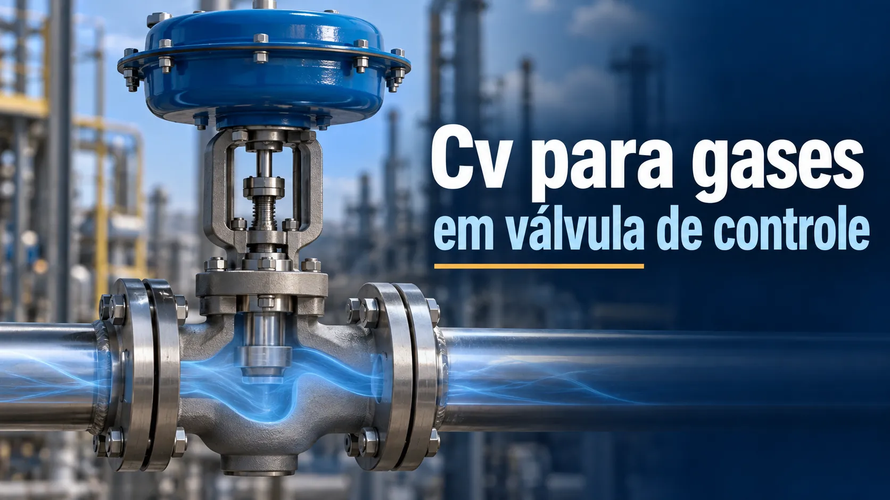

Cv/Kv para gases em válvula de controle: gas sizing e choked flow
Conteúdo técnico: ALOGY Engenharia · Atualizado em: 11/09/2026

Para líquidos, uma estimativa de Cv/Kv pode ser relativamente direta. Para gases e vapores, o escoamento é compressível: pressão, densidade, temperatura e velocidade mudam ao atravessar a válvula. Por isso, gas sizing precisa considerar muito mais do que apenas vazão e ΔP.
O que entra em um sizing de gás
P1 e P2 absolutos
A relação de pressão é central para avaliar expansão e possibilidade de choked flow. Não misture bar(g) com bar(a).
T1
A temperatura de entrada afeta densidade e volume específico. Use a condição real prevista para cada caso operacional.
Gas specific gravity / MW
A composição ou massa molar do gás influencia a capacidade requerida. Misturas podem exigir propriedades na condição de processo.
Z · compressibility factor
Quando aplicável, corrige o desvio do comportamento ideal. Não assuma Z = 1 sem justificar a faixa de pressão e composição.
Expansion factor Y
Representa a mudança de densidade do gás conforme ele se expande ao atravessar a restrição.
xT / pressure drop ratio factor
É um parâmetro da válvula/trim usado nos critérios de fluxo crítico. Deve vir de dados do fabricante para a configuração selecionada.
Visual: o que a válvula precisa “enxergar”
Choked flow não significa “válvula bloqueada”
Em choked flow, chega um ponto em que reduzir mais P2 não aumenta a vazão na mesma proporção esperada. A condição depende da relação de pressões, propriedades do gás e características da válvula. Isso afeta capacidade, ruído, velocidade e a escolha do trim.
Uma válvula pode atender o Cv requerido e ainda ser inadequada por ruído, velocidade, rangeability, pressão de fechamento, estabilidade ou operação excessivamente próxima do assento.
Por que superdimensionar também é problema
Escolher um Cv muito acima do necessário pode concentrar a operação em pouca abertura, reduzir resolução efetiva, aumentar sensibilidade a atrito/stiction e piorar a qualidade do controle. O objetivo não é “usar a maior válvula possível”, e sim atender minimum, normal e maximum flow dentro de uma faixa de abertura coerente.
Checklist antes de fechar a seleção
- confirmar se a vazão é normalizada, standard, actual volumetric ou mass flow;
- converter P1/P2 para valores absolutos consistentes;
- usar T1 e composição reais, não valores genéricos;
- avaliar choked flow, aerodynamic noise e velocidades;
- confirmar Cv/Kv disponível por abertura e característica da válvula;
- verificar actuator sizing, shutoff pressure, fail position e supply pressure;
- avaliar rangeability e abertura prevista em mínimo/normal/máximo;
- validar o conjunto com fabricante e edição aplicável da série IEC 60534.
Ferramentas e artigos relacionados
Leia também: cavitação e flashing e calibração de válvula de controle 4–20 mA.
Referência técnica
- Emerson/Fisher — Control Valve Handbook, incluindo sizing de gases/vapores, choked flow, atuadores e seleção.
Aviso técnico
Este conteúdo é educativo e apoia pré-dimensionamento e conferência. Gas sizing final deve considerar o método aplicável, dados reais da válvula, propriedades do gás, ruído, velocidade, rangeability, atuador e condições extremas de processo.